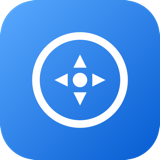

IGV-X — a robust, modern fork of IGV (Integrative Genomics Viewer) for large epigenomics sessions: chromosome-name resolution, bigWig NPE fix, large-session performance, relative session paths, bookmarks, high-quality export, organize-by-genotype, in-app updates
- Chromosome-name resolution that never crashes: fixes the stock IGV 2.19.5 bigWig NullPointerException on TAIR10 WGBS sessions (hundreds of methylation bigWigs with Chr1..ChrM vs RefSeq aliases); case-insensitive, alias-aware resolution across bigWig/bigBed/BAM/BED/VCF using genome alias info — never global lowercase conversion, never renaming user files.
- Large-session performance for ~900 bigWig sessions: bounded loading threads, async loads, honest progress, viewport culling, caching.
- Relative session paths by default, optional .igvx.json companion, bookmarks & highlights persisted in the session, cancelable session loading.
- High-quality PNG/SVG/PDF export, multi-track selection, configurable default quantitative ranges, trackpad navigation.
Firefly
Swift
MIT License
Menu bar utility that keeps your Mac awake — on demand, on a schedule, or automatically, including through a closed lid.
- Prevent idle sleep, keep the display awake too, or survive a closed lid — independently combinable, the same mechanism caffeinate uses under the hood
- Quick durations (15/30/60/120/240 minutes) or a custom timer
- Scroll on the menu bar icon to extend or shorten an active timer
- "Until this app quits" — pick any running app and stay awake for as long as it's open
DockAnchor
Swift
MIT License
Keeps the macOS Dock pinned to one display across multiple monitors
- Guard Dock — pause/resume without quitting.
- Anchor Screen — pick which connected display keeps the Dock.
- Launch at Login — installs/removes a per-user LaunchAgent.
- Check for Updates — Weekly / Monthly / Never. DockAnchor only *checks* GitHub Releases for a newer version tag in the background; it never downloads or installs anything automatically. If a newer version exists, a menu item appears linking to the release page so you can grab it yourself.
Menu bar organizer for Mac — sort icons into always-visible and hidden groups, and reach every one of them from a single click.
- One-click access to every menu bar icon, whether or not your Mac currently has room to display it. Pocket keeps a live list of every app with a menu bar icon and opens any of them directly, so nothing is ever truly out of reach.
- Click again to close it — the same click that opens the list closes it.
- Global keyboard shortcut to bring up the list from anywhere.
- Auto-close after clicking elsewhere, after an idle timeout, or when the frontmost app goes fullscreen — all optional, all in Settings.

MiddleClick-AutoScroll-Safari
JavaScript
MIT License
Middle-click anywhere on a page to pan and scroll it in any direction — classic autoscroll, for Safari on macOS.
- Two ways to use it — a quick click arms autoscroll hands-free (move the mouse, no button held); a press-and-drag stops the instant you let go.
- Speed ramps with distance from where you clicked, with a small dead zone so you don't scroll by accident.
- Axis snapping — near-straight drags lock to one axis so small hand tremor doesn't cause diagonal drift.
- Scroll bubbling — if the scrollable box you started in (a sidebar, a code block) hits its own limit, autoscroll keeps going on the page behind it instead of getting stuck.